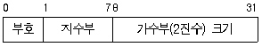
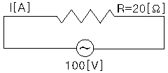
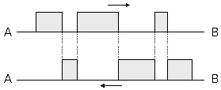

정보기기운용기능사 (2005-10-02 기출문제)
1과목: 전산 기초 이론
1. 전자계산기에서의 비교판단기능을 담당하는 기능은?
- 산술연산기능
- 제어기능
- 논리연산기능
- 입·출력기능
(정답률: 67%)

2. 다음 기본 불 대수 관계식 중 맞는 것은?
- A·A = 1
- A·(B+C) = A·B·C
- A + 1 = A
- A + A·B = A
(정답률: 53%)
3. 기계 외부에서 사람이 사용하는 프로그램 언어와 기계 내부적으로 기계만이 알 수 있는 기계어 사이에 이들을 연결시켜 주는 번역 프로그램은?
- 디코더(Decoder)
- 컴파일러(Compiler)
- 심볼릭어(Symbolic Language)
- C 언어(C Language)
(정답률: 80%)
4. 다음 중 번역기에 의해 기계어로 번역된 프로그램을 무엇이라 하는가?
- 실행 프로그램
- 원시 프로그램
- 목적 프로그램
- 편집 프로그램
(정답률: 59%)
5. 다음 소프트웨어 중 펌웨어(Firmware)로 구현하기에 가장 적합한 것은?
- 컴파일러(Compiler)
- 사용자 프로그램
- 시스템 유틸리티
- 운영체제의 핵심 부품
(정답률: 45%)
6. 컴퓨터의 입력장치에 해당 되지 않는 것은?
- 스피커
- 카드 판독기
- 광학문자 판독기
- 건반(Key Board)
(정답률: 85%)
7. AND Gate와 EX-OR Gate, 그리고 OR Gate를 이용하여 3비트를 가산하는 전가산기 회로를 구성하려고 한다. 이 전가산기를 만들기 위하여 각각의 Gate는 몇 개씩 필요한가?
- AND Gate : 1개, EX-OR Gate : 1개, OR Gate : 1개
- AND Gate : 2개, EX-OR Gate : 1개, OR Gate : 1개
- AND Gate : 2개, EX-OR Gate : 2개, OR Gate : 1개
- AND Gate : 2개, EX-OR Gate : 2개, OR Gate : 2개
(정답률: 59%)
8. 그림에 해당되는 데이터 표현 형식은?

- 고정 소숫점 데이터 형식
- 부동 소숫점 데이터 형식
- 10진 정수 데이터 형식
- 2진 보수 데이터 형식
(정답률: 75%)
9. 다음 중 산술·논리연산장치(ALU)의 구성에 해당되는 것은?
- 가산기
- ROM
- 명령해독기
- I/O채널
(정답률: 79%)
10. 다음은 컴퓨터의 기능을 나열하였다. 이 중 중앙처리장치에 들어가는 것만을 묶어 놓은 것은?
- 입력기능, 기억기능, 연산기능
- 제어기능, 연산기능, 기억기능
- 입력기능, 기억기능, 출력기능
- 제어기능, 연산기능, 출력기능
(정답률: 78%)
2과목: 정보 기기 운용
11. 사무실내에서 서류대신 상호간 업무처리를 통신으로 할 수 있는 것은?
- 전자우편
- 워드프로세서
- 레이저프린터
- CD-ROM
(정답률: 76%)
12. 줄의 법칙에 있어서 발생하는 열량의 계산식은?
- H = 0.24RI2t[cal]
- H = 0.24I2R[cal]
- H = 0.024RI2t[cal]
- H = 0.024RI2[cal]
(정답률: 62%)
13. 컴퓨터의 바이러스 백신 프로그램 선택 시 고려되어야 할 사항으로 올바른 것은?
- 천천히 검색이 되어야 한다.
- 메모리 사용량이 많아야 한다.
- 압축된 파일에 대한 검색이 가능해야 한다.
- 변형 가능한 바이러스는 검색을 하지 않아도 된다.
(정답률: 76%)
14. 광학적인 방법으로 문자나 그림을 읽어들여 전기적인 신호로 바꾸어 통신망을 이용해 원거리에서 이를 받아 복사해내는 사무기기를 나타낸 것은?
- 복사기
- 팩시밀리
- 전자우편
- 전자회의
(정답률: 82%)
15. 다음 중 최근 통신실에 주로 사용되는 배선 방법으로 이전이나 증설이 편리한 것은?
- 천장 배선용 배관
- 벽면용 폴(Pole)
- 3선 케이블 덕(Duck)
- 액세스 플로어(Access Floor)
(정답률: 73%)
16. 1000[pF]의 세라믹 콘덴서와 동일한 용량의 콘덴서는?
- 0.0001[μF]
- 0.001[μF]
- 0.01[μF]
- 0.1[μF]
(정답률: 63%)
17. 광 디스크에 대한 설명 중 옳지 않은 것은?
- 잡음 발생율이 자기기록매체에 비하여 적다.
- 종류에는 CD, LD, CD-ROM 등이 있다.
- 사용자 임의로 읽고 쓸 수 있어 자주 수정되는 자료의 보관에 유리하다.
- 랜덤 엑세스로 정보를 신속하게 읽을 수 있다.
(정답률: 56%)
18. 다음 중 전화기에서 송수화기를 올려 놓으면 절단(OFF) 상태이고 송수화기를 들게 되면 개통(ON)상태가 되어 신호를 보낼 수 있도록 하는 기능을 가진 것은?
- 훅스위치
- 측음방지회로
- 다이얼
- 유도코일
(정답률: 74%)
19. 다음 중 빛을 전기적 신호로 바꾸는 소자의 이름은?
- PAD
- ARD
- FET
- LED
(정답률: 37%)
20. 다음 중 전산실 조명기준으로 가장 적합한 것은?
- 10 LUX
- 200 LUX
- 500 LUX
- 2000 LUX
(정답률: 72%)
21. 현재 우리나라에서 상용으로 사용하고 있는 가정용 전원은 무엇인가?
- 교류(AC) 150[V]
- 교류(AC) 220[V]
- 직류(DC) 110[V]
- 직류(DC) 220[V]
(정답률: 79%)
22. 다음 중 컴퓨터 시스템을 운영하는 도중 불의의 정전으로부터 예방을 할 수 있는 장비는?
- MODEM
- UPS
- AVR
- FEP
(정답률: 79%)
23. 컴퓨터 관련 단말기 작업자세 중 올바르지 않은 것은?
- 화면과의 거리는 40～50cm가 적당하다.
- 눈은 화면을 올려다 보는 것이 좋다.
- 손등과 팔은 수평으로 하는 것이 좋다.
- 무릎의 각도는 90도 이상을 유지한다.
(정답률: 86%)
24. 사무실 업무에 따른 OA기기의 분류 중 옳지 않은 것은?
- 데이터 처리 - COM, CAR
- 문서와 도형의 작성 - 워드프로세서, 워크스테이션
- 통신, 전송 - PBX, 팩시밀리
- 정보의 보전, 검색 - 마이크로 필름, 광디스크
(정답률: 56%)
25. 가정에서 60[W] 전구 5개를 하루 5시간 씩 30일 동안 점등했을 때, 전체 전력 소모량은?
- 450[Wh]
- 4.5[kWh]
- 45[kWh]
- 450[kWh]
(정답률: 61%)
26. 다음 중 단말기의 구성요소에 속하지 않는 것은?
- 입출력 제어장치
- 회선 제어장치
- 신호 증폭장치
- 회선 접속장치
(정답률: 55%)
27. 바이러스 감염증상이 아닌 것은?
- 파일을 변경한다.
- 실행속도가 빨라진다.
- 컴퓨터를 리셋 시킨다.
- 필요 없는 메시지를 출력한다.
(정답률: 88%)
28. 슈퍼마켓이나 백화점 등에서 바코드나 라이트펜 등을 이용하여 상품의 재고, 판매, 금액의 합산 등을 하는 단말기는?
- 지능형 단말기
- POS용 단말기
- 은행 단말기
- 교육용 단말기
(정답률: 90%)
29. 20[Ω]의 저항에 100[V]의 전압을 가하면 몇 [A]의 전류가 흐르겠는가?

- 5
- 3
- 2.5
- 1.5
(정답률: 81%)
30. 다음 중 팩시밀리의 종류 중 A4를 기준으로 해서 전송속도가 5초 이내인 것은?
- G1
- G2
- G3
- G4
(정답률: 78%)
3과목: 정보 통신 일반
31. FEP(Front End Processor)의 기능과 관계가 없는 것은?
- 전송회선과의 전기적 인터페이스
- 전송제어 및 접속제어
- 에러의 검출 및 재전송
- 데이터 파일(File)의 저장
(정답률: 52%)
32. 정보통신시스템에서 데이터전송계의 구성요소가 아닌 것은?
- 단말장치
- 통신제어장치
- 컴퓨터장치
- 신호변환장치
(정답률: 62%)
33. 화상회의에 관한 설명으로 적합하지 않은 것은?
- 원거리에 있는 사람들 사이의 화면회합이다.
- N : N의 상호교환방식이 기본적 개념이다.
- 참여자가 영상과 함께 음성도 상호교환 할 수 있다.
- 영상·음향회의 방식에서는 일방향으로만 가능하다.
(정답률: 79%)
34. 다음 중 정(+)마크 부호방식인 것은?
- 수직 페리티방식
- 수평·수직 페리티방식
- 군계수 체크방식
- Biquinary 부호 방식
(정답률: 57%)
35. 다음 중 주파수분할 다중화(FDM)의 특징이 아닌 것은?
- 일정한 폭을 가진 통신선로의 주파수 대역폭을 몇 개의 작은 대역폭으로 나누어 여러개의 저속도를 동시에 이용한다.
- 시분할 다중화 장비에 비해 비교적 간단한 구조를 가진다.
- 재생증폭기가 전체 채널에 여러개가 필요하다.
- 진폭등화를 동시에 수행할 수 있다.
(정답률: 46%)
36. 광통신은 빛에 의한 통신이다. 다음 중 발광기로 사용되는 다이오드는?
- 애벌런시 포토 다이오드(APD)
- 핀 포토 다이오드(PIN·PD)
- 제너 다이오드(ZD)
- 레이저 다이오드(LD)
(정답률: 80%)
37. 20[Mhz]의 주파수를 사용하는 신호의 파장[m]은? (단, 이 신호의 전파속도는 빛의 속도와 같다.)
- 10
- 15
- 20
- 150
(정답률: 40%)
38. 데이터 전송방식과 관계가 없는 것은?
- 반이중(Half Duplex) 방식
- 전이중(Full Duplex) 방식
- 단방향(Simplex) 방식
- 다중처리(Multi Process) 방식
(정답률: 77%)
39. 통신용량을 향상시키려면 대역폭을 어떻게 하는 것이 가장 적합한가?
- 대역폭과는 전혀 관계가 없다.
- 대역폭이 진폭과 진동시간에 비례하여야 한다.
- 대역폭을 크게 한다.
- 대역폭이 좀 더 좁아져야 한다.
(정답률: 69%)
40. 다음 중 컴퓨터 네트워크의 목적이 아닌 것은?
- 컴퓨터 하드웨어 자원의 공유
- 컴퓨터 소프트웨어 자원의 독점
- 데이터 자원의 공유
- 컴퓨터 부하의 분산화
(정답률: 73%)
41. 다음 중 정보통신의 특징에 속하지 않는 것은?
- 소프트웨어 기술을 필요로 하지 않는다.
- 취급하는 정보를 기계(컴퓨터)로 처리가 가능하다.
- 주·야 관계없이 장시간 같은 동작을 할 수 있다.
- 신뢰성이 높고 광대역 전송이 가능하다.
(정답률: 79%)
42. 기존 미디어의 기능에 고도로 발달된 전자, 통신, 정보기술 등을 결합하여 정보를 전달하는 뉴미디어라고 볼 수 없는 것은?
- 화상전화
- 위성방송
- 케이블 TV
- 신문
(정답률: 82%)
43. A와 B를 연결하는 포인트 투 포인트(Point To Point) 회선에서 빗금친 부분의 데이터가 화살표 방향으로 전송되는 방식은?

- 전이중 방식
- 반이중 방식
- 심플랙스 방식
- 에코플랙스 방식
(정답률: 70%)
44. 데이터통신의 특징으로 적합하지 않은 것은?
- 시스템의 신뢰도가 높다.
- 고도의 에러제어방식이 요구된다.
- 광대역 전송이 곤란하다.
- 시간이나 회수에 관계없이 같은 내용을 반복하여 전송할 수 있다.
(정답률: 72%)
45. 마이크로파(Microwave) 통신방식과 관계 없는 것은?
- 전자파를 이용하는 무선통신방식이다.
- 광을 이용하므로 전송속도가 빠르다.
- 이동통신 수단으로도 이용되고 있다.
- 중계거리를 고려하여야 한다.
(정답률: 64%)
46. OSI 7계층 참조모델에서 인접 개방형 시스템간의 데이터 전송, 에러 검출, 오류 회복 등을 취급하는 계층은?
- 물리적 계층
- 데이터링크 계층
- 응용 계층
- 세션 계층
(정답률: 62%)
47. 음성, 데이터, 화상 등 여러 종류의 정보를 디지털화하여 단일망에서 종합적으로 처리할 수 있는 통신망은?
- 패킷정보통신망
- 특정회선교환망
- 종합정보통신망
- 부가가치통신망
(정답률: 70%)
48. 다음 중 데이터링크 프로토콜이 아닌 것은?
- BSC
- X.25
- SDLC
- DDCMP
(정답률: 52%)
49. 데이터통신의 이용사례 중 크레디트 체크(Credit Check)는 어느 작업 업무에 해당하는가?
- 시분할 대화(Time-Sharing Conversation)
- 정보 검색(Information Retrieval)
- 원시 데이터 입력 및 수집
- 원격 일괄처리
(정답률: 54%)
50. 통신 제어장치에서 Data의 전송 도중 Error가 발생하여 검출 되었을 때 Data의 재 전송 없이 Error를 수정할 수 있는 Code는?
- 해밍 코드(Hamming Code)
- 패리티 코드(Parity Code)
- 블록 코드(Block Code)
- 비상수 코드(Constant Ratio Code)
(정답률: 79%)
4과목: 정보 통신 업무 규정
51. 정보통신기기의 설치 및 유지·보수공사는 어느 법령에 따라야 하는가?
- 정보화촉진기본법
- 정보통신기기보전규정
- 전기통신사업법
- 정보통신공사업법
(정답률: 60%)
52. 다음 중 절대레벨의 단위는?
- [mW]
- [dB]
- [dBm]
- [Hz]
(정답률: 62%)
53. 정보통신부장관의 권한이라고 볼 수 없는 것은?
- 이용약관의 인가
- 이용약관의 공시
- 기간통신사업자의 허가
- 이용약관의 변경 명령
(정답률: 35%)
54. 정보통신부장관이 단말장치에 대한 기술기준을 정하는 목적에 해당되지 않는 것은?
- 전기통신망 보호를 위하여
- 국간 교환설비의 예비회선 확보를 위하여
- 전기통신설비의 운용자와 이용자의 안전을 위하여
- 전기통신역무의 품질유지를 위하여
(정답률: 50%)
55. 전기통신 기본계획에 포함되지 않는 것은?
- 전기통신의 이용 효율화에 관한 사항
- 전기통신의 질서유지에 관한 사항
- 전기통신설비에 관한 사항
- 전기통신사업자의 사업계획서에 관한 사항
(정답률: 55%)
56. 기간통신사업자가 다른 전기통신사업자의 전기통신설비를 상호접속하여 필요한 설비 또는 시설 등을 공동사용하고자 할 때 어떻게 하는 것이 적합한가?
- 정보통신부장관의 승인을 받아 그대로 접속한다.
- 시설 및 관리상 공동사용이 허용 안된다.
- 통신위원회에 신고하고 공동사용하여야 한다.
- 서로 협정을 체결하고 공동사용하여야 한다.
(정답률: 60%)
57. 정보통신망사업자로서 행해서는 아니되는 행위와 관련이 없는 것은?
- 국가의 안전을 위해롭게 하는 행위
- 공공의 안녕 질서를 해치는 행위
- 미풍양속을 해치는 행위
- 국가의 정치개혁을 도모하는 행위
(정답률: 52%)
58. 다음 중 전기통신사업의 경영권자가 아닌 것은?
- 정보통신부장관
- 부가통신사업자
- 기간통신사업자
- 별정통시사업자
(정답률: 73%)
59. 컴퓨터 프로그램 저작자 및 저작권 등에 대한 설명으로 틀린 것은?
- 프로그램 저작자란 프로그램을 창작한 자를 말한다.
- 프로그램 저작권은 프로그램 사용승인이 난 후부터 효력이 발생한다.
- 프로그램 저작권은 그 프로그램이 공표된 다음연도부터 50년간 존속한다.
- 프로그램 저작권자는 다른 사람에게 그 프로그램의 사용을 허락할 수 있다.
(정답률: 48%)
60. 전기통신설비의 기술기준에서 강전류 전선이란 몇 볼트이상의 전력을 송전하거나 배전하는 전선을 말하는가?
- 220[V]
- 300[V]
- 440[V]
- 600[V]
(정답률: 75%)